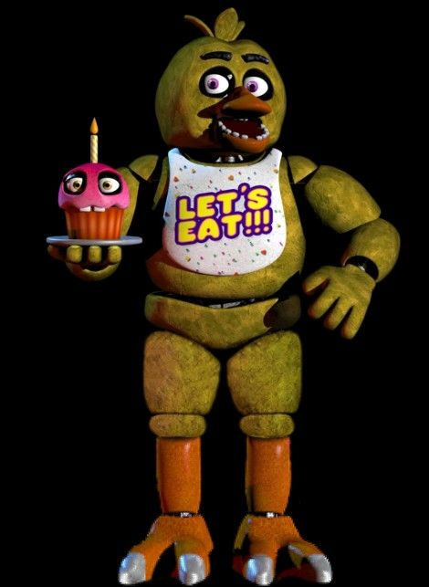
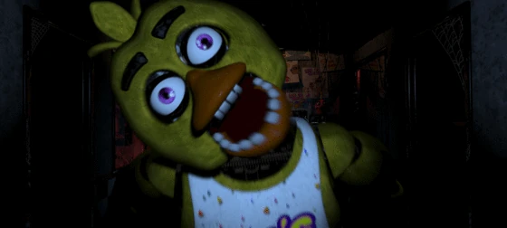

Aparência

Chica é uma galinha animatrônica amarela de cabeça esférica, bico laranja, olhos de cor roxo e sobrancelhas pretas. Ela usa um babador escrito "LET'S EAT!!!" em letras amarelas contornadas de roxo.
